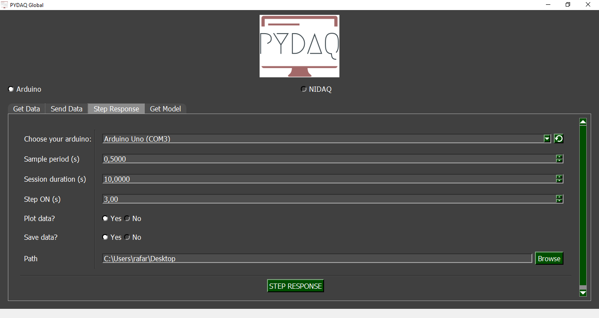
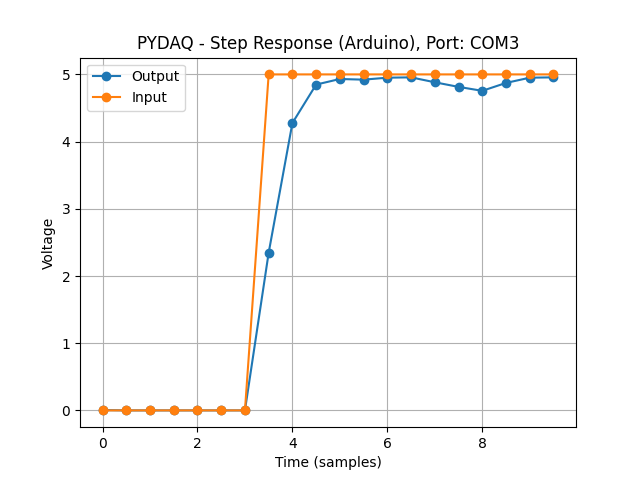

Step response with Arduino boards
NOTE 1: before working with PYDAQ, device driver should be installed and working correctly as a DAQ (Data Acquisition) device
NOTE 2: To acquire/send data with arduino, the code provided here (located at arduino_code) should be firstly uploaded in Arduino. Default output port is 13 and analog input is A0 and these ports can be changed in the above-mentioned code. This code only works with digital output, since this is a limitation of Arduino Boards.
NOTE 3: Since are used digital output ports, the output will be 0V for step minimum and 5V for step maximum.
Step Response using Graphical User Interface (GUI)
Using GUI for step response is really straighforward and require only two LOC (lines of code):
After this command, the graphical user interface screen will show up, where the user should select the Arduino option and go to the Step Response tab, to be able to define parameters and start to acquire data.

The user is now able to select desired Arduino and sample period, as well as the session duration and the time when the step will be on. Also, the user will define if the data will or not be plotted and saved.
Step Response using command line
It will be presented how to use StepResponse (and step_response_arduino) to perform a step response experiment using an Arduino board.
Firstly, import library and define parameters:
# Importing PYDAQ
from pydaq.step_response import StepResponse
# Defining parameters
sample_period_in_seconds = 1
session_duration_in_seconds = 10.0
step_time_in_seconds = 3.0
com_port_arduino = 'COM3'
will_plot = "no" # Can be realtime, end or no
Then, instantiate a class with defined parametes and send the data
# Class StepResponse
s = StepResponse(com=com_port_arduino,
ts=sample_period_in_seconds,
session_duration=session_duration_in_seconds,
step_time=step_time_in_seconds,
plot_mode=will_plot
)
# Method step_response_arduino
s.step_response_arduino()
If you choose to plot you can see the data sent on screen, i.e:

You can see more detailed bellow: